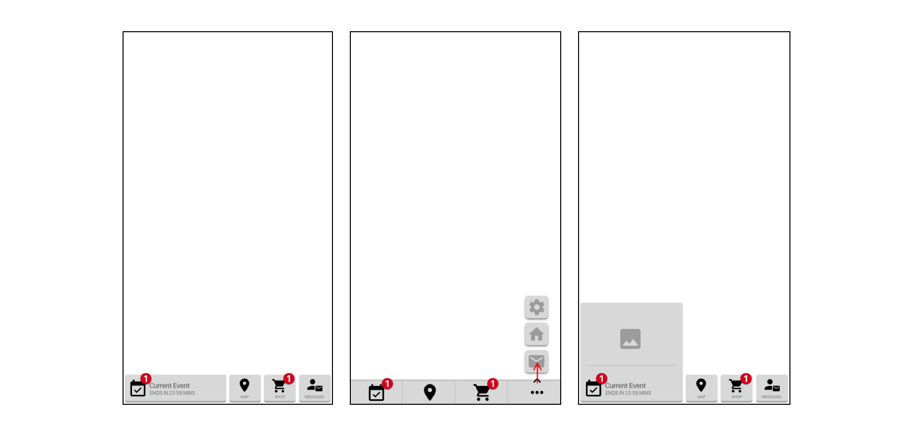
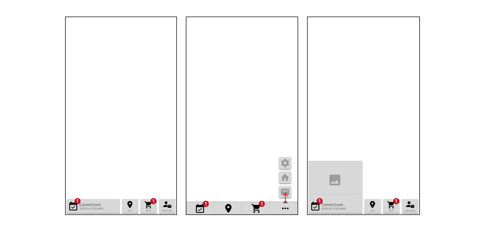
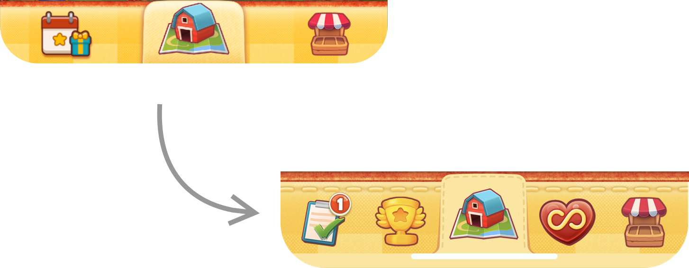
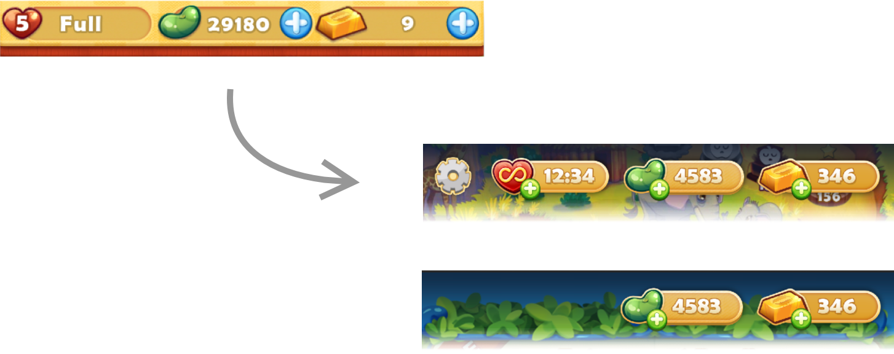
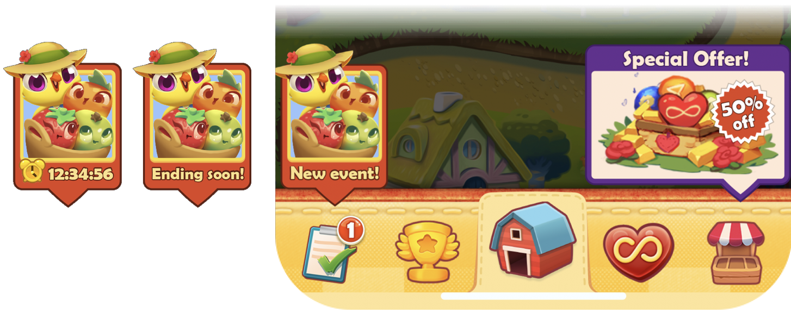

Navigation Redesign for Farm Heroes Saga
Before
After
Overview
The flat and wide nature of the IA doesn't provide any flexibility for prioritising different features. Or allow for surfacing different areas of the game. This is critical for experimenting and tailoring experiences.
The business problem
- We can no longer add new features or events to the game.
- We can't experiment surfacing different areas of the game or features to players. This limits our ability to experiment and tailor experiences.
The player problem
- I'm overwhelmed I can't focus on the things that are important to me.
- I can't find my location on the saga.
- I don't know where to find feature x.
- What should I focus on?
Goals
- Create scalable navigation that allows for features to be added and removed
- Clear sections that can be moved and combined to allow for experiments in targeting different segments
- Present clear navigation to the player that is easy to use and will enable them to find and focus on the activities they are interested in.
- No negative impact on KPI's - We predict there will be an initial drop in game-rounds as players get used to the new navigation.
- Players can find their position in the saga.
- Players can find a specific feature.
Impact and Results
- As predicted, there was an initial drop in game-rounds, this stabilised after a week or so.
- Players expressed an increased quality of life due to the clean home page and focal points.
- More visits to the shop.
- The team can keep adding features.
Process
Gathering insights
I spoke to stakeholders and our users to better understand the business requirements and how they match with our users' problems and needs.
Card sorting, sketching and exploring
I ran a card sort session with an artist and dev work through the options that matched the users' needs and routines.
Card sort session.
Sketching options.
 

Capturing sketches and exploring.
Prototype and user test
When testing with our users they found the cleaner layout easier to parse and find their location on the saga. Having three clear sections that represented their main activities was also positive.
However, users weren’t able to quickly identify the icons on the bottom. On first entering the page, they were concerned about where all the features had gone and how they would know the status of events and sales.
We addressed this by creating a call-out system and add 3 "promo slots" at the top of the page. We also revisited the icons.

Creating a scalable system
We created more clarity by surfacing the areas of the game that matched the player’s activities adding a bottom menu bar. This also allows us to scale up to 5 sections and experiment with the areas of the game we surface to different players.
Moving from a static top bar to a modular system reduced noise by only showing the relevant information depending on the screen or situation.
Adding callouts help surface new events, offers and changes in status that may be important to the player. Without interrupting their flow with pop-ups.
Final and Rollout